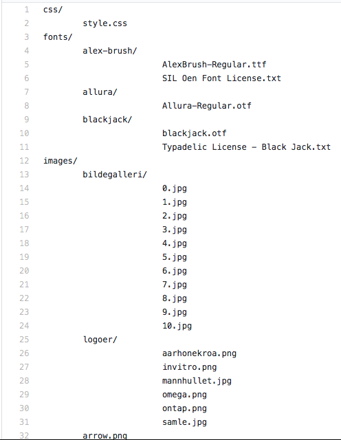
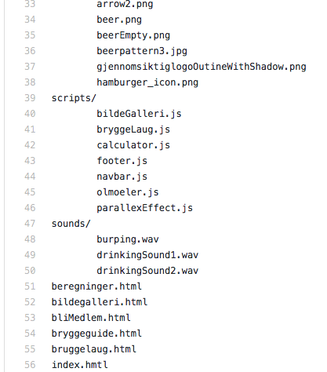

P3 Changes
Peder, Filip, Marcus og Sander
IT2805 November 2017
Klientnavn: Gløshaugen bryggeforum
Nettsidenavn: Gløshaugen bryggeforum
Kontaktperson: Tord Standnes, leder
Link til nettsiden: Nettside
Vi har endret designet betydelig fra hva vi først planla.
Vi hadde først tenkt til å lage syv sider, men endret dette til at "Om oss" siden ble integrert i forsiden, etter forespørsel fra klienten.
Vi har endret menyen til å være integrert i rammen på siden. I tillegg la vi til hover-animasjoner på linkene i menyen, da dette bidrar til å rette fokuset til brukeren mot elementet han beveger seg over, og tilbyr dermed et mer intuivit navigasjonsdesign.
Vi lagde en literteller (på antall liter brygget) i menyen, slik at det gir et inntrykk over hvor stort Bryggeforumet er. I litertelleren har vi en øl med en animasjon. Dette er ment for å være gøyalt. Animasjonen gjør siden mer gøy, noe som passer bra inn når brygging er for det meste en sosial og gøy aktivitet.
Planen var også å ha logoen til GB i menyen, men etterhvert som vi prøvde forskjellige design, fant vi ut at det var best å la være å ha den i menyen og heller implementere den i innholdsdelen av siden.
Vi har også lagt til en loader som vises inntill nettsiden lastes inn, slik at bruker ikke opplever at nettside elementer hopper rundt, mens han venter på at siden skal lastes. Dette fører til en bedre brukeropplevelse og et mer sømløst produkt.
Vi bestemte oss også for å seksjonere innholdet for at det skulle bli mer oversiktlig. I tillegg utviddet vi innholdselementet slik at den er bredere og vi får dermed bedre plassutnyttelse på siden.
Vi la også til flere JavaScripts enn vi hadde planlagt, da vi så behovet for dette. Dette er for eksempel "Footer.js" og "parallexEffect.js". "Footer.js" gjør innholdet til footeren konsistent på alle sidene, på samme måte som "navbar.js". "ParallexEffect.js" gjør at bakgrunnen beveger seg annerledes (annen hastighet) enn andre elementer på siden, samtidig som den fjerner loading-animasjonen når siden lastes inn.
Vi endret også "posisjon" av slideshowet fra "på" siden til "flytende" på siden. Slideshowet kommer nå opp hvis en trykker på et bilde i bildegalleriet. Dette designet laget vi da det tilbyr minst like mye funksjonalitet, men samtidig har bedre plassutnyttelse og av gruppens mening bedre utforming, da man kan klikke på hvert individuelle bilde og ikke trenger å forholde seg til en fast plassert slideshow funksjon. Vi bestemte oss også for at bildene i slideshowet skulle holde sitt originale størrelsesforhold, da det forrige designet deformerte bildene.
Vi endret måten informasjonen om bryggelaugene blir vist, fra at informasjonen vises "inne i" siden, til at den blir en "pop-up".
Vi la også til en egen mobilmeny for bedre bruketopplevelse ved bruk av enheter med mindre skjermer (bredde < 1200px). Puttet også inn en funksjon i "navbar.js" for å fjerne teksten "Meny" fra mobilmenyen når den blir klikket på. Vi bestemte oss også for å fjerne visse elementer fra nettsiden når skjermen ble liten, som for eksempel logoer og øl-måler, da disse tok opp unødvendig plass på en liten skjerm. Dette fører til bedre oversikt og svært mulig raskere innlasting og mindre dataforbruk på mobilt nettverk.
Mange av fargekodene er nå basert på øl-farger. Som heading h2 og h3, og hyperlinkene til seksjonene. Bakgrunnsfargen til innholdet var en farge vi bare syntes passet inn, det ga en nesten retro style på siden.
Mange av design valgene ble utført gjennom en prøv og feil metode. Hvis det ser bra ut, og passer til siden, så bruker vi det. Det var tanken. F.eks på design valg: Logoplasseringen, horisontale linjer, linkene, innhold design og seksjon design.
Modularitet ble løst med bruk av javascript og DOM. Navbar blir lastet inn med navbar.js. Footer blir lastet inn med bruk av footer.js. Øltelleren blir lastet inn med bruk av olmoeler.js.
Alle filnavn nedenfor er lagt i en mappe kalt "nettside".
 | Filnavn | Beskrivelse | Ansvarlig |
|---|---|---|
| Index.html | Presenterer Gløshaugen Bryggeforum for brukeren og gir muligheter for å utforske resten av nettsiden | Alle |
| bliMedlem.html | En side hvor en kan bli medlem av Gløshaugen Bryggeforum. Mer informasjon rundt medlemsskap vil bli bestemt av bryggeforumet. | Peder |
| bryggeguide.html | En detaljert bryggeguide | Peder |
| beregninger.html | En side for beregning av abv (alkoholprosent) og tabell over øltyper | Alle |
| bildegalleri.html | Et bildegalleri som viser bilder fra aktivitetene til GB | Alle |
| bryggelaug.html | Side for å vise alle bryggelaug som er medlem i GB, samt info om disse | Alle |
| style.css | CSS for alle sidene | Alle |
| bildeGalleri.js | Sørge for at bildene i bildegalleriet vises, samt legge til en "onclick" funksjon på bildene, slik at det vises som en popup | Sander |
| bryggelaug.js | Sørge for at alle bryggelaugene vises, samt legge til en "onclick" funksjon på logoene, slik at det vises en popup med mer informasjon | Sander |
| calculator.js | Sørge for at kalkulatoren fungerer | Sander |
| footer.js | Sørge for modularitet på siden i form av footer | Marcus |
| navbar.js | Sørge for modularitet på siden i form av navbar | Filip |
| oelmaaler.js | Implementere en ølmåler i navbaren og få den til å oppdateres kontinuerlig | Marcus |
| parallexEffect.js | Få bakgrunnen til å scrolle med en annen hastighet enn andre elementer på siden + loader effekt | Filip og Marcus |
Øl-emojien er tatt fra denne siden (beer.png).
Filip lagde en annen versjon av dette bilde, hvor ølen ser tom ut. Denne blir brukt i animasjonen (beerEmpty.png).
Bakgrunsbilde (backgroundpattern3.png) er tatt fra denne siden.
Hamburg ble tatt fra denne siden (hamburger_icon.png).
Arrowene til slideshowet ble tatt fra denne siden (arrow.png).
Gløshaugen Bryggeforum sin logo har vi fått fra BG.
favicon (favicon.ico) ble laget av Filip.
Bryggelaug logoene ble laget av bryggelaugene.
Lyd effektene i øl animasjonen ble tatt fra freesound.org og redigert av Filip.
Fonten blackjack ble funnet her og brukt som font på tittelene.
Filip lagde øldrikke animasjonen i menyen og også scriptet for hvordan bakrgunnen scroller annerledes
enn resten av siden. Han tok også stor del i CSS design av nettsiden generelt.
Peder hadde hovedsakelig ansvaret for bryggeguiden. Han lagde en detaljert guide om hvordan
en brygger forskjellig typer øl. I tillegg laget han bli medlem siden.
Marcus tok ansvar for å lage ølteller, loading animasjon, samt footer, mobilmeny og mye css og design.
Sander laget scripts for bildegalleriet og bryggelaugene, samt kalkulator scriptet. Jobbet litt med css.